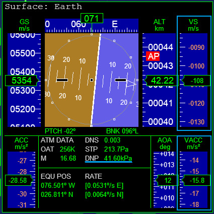

Part8 再突入と着陸
大気圏に再突入し、滑空してKSCに着陸します。
再突入
左右に機体を傾けて針路を調整しつつ、目的地の真上を通るのを待つ。
大気圏に再突入し、旋回して速度を落とす。
旋回を始める
機体を左か右に90°倒しておく。
目的地の真上に到達したら、旋回を始める。
フライトスティックを目いっぱい手前に引く。
Surface MFD
スティックを引いたまま旋回を続ける。
Surface MFDでデータを確認する。

| DNP | Dynamic Pressure | 動圧 | 機体が大気にぶつかって受ける圧力 |
| VS | Vertical Speed | 垂直速度 | 降下・上昇する速度 |
| VACC | Vertical Acceleration | 垂直方向の加速度 |
降下速度と動圧
スティックを引いたまま、左右にロールする。
DNPが40kPaを維持するようにする。
| DNPが40kPaより大きい | 上側（宇宙）にロールして降下速度を落とす |
| DNPが40kPaより小さい | 下側（地球）にロールして降下速度を上げる |
VSは、プラスなら上昇、マイナスなら降下速度を意味する。
VSとVACCには、以下のような関係がある。
| VACCがプラス | VSがプラス方向に変化する |
| VACCがマイナス | VSがマイナス方向に変化する |
| VACCがゼロ | 現在のVSを維持する |
VACCを小さい値にとどめておくと、安定して降下速度をコントロールできる。
旋回を終了する
Surface HUDには、目的地を示す目印が表示されている。
目的地の方角を向いたら、旋回を止める。
宇宙船の姿勢を水平に戻しておく。
滑走路に降りる
滑空して、打ち上げに使用したのと同じ滑走路に降りる。
RCS MODEをOFFに切り替えておく。
滑空する
トリムを使って高度30km付近を維持する。
Deleteを押すと機首を上げる。
Insertを押すと機首を下げる。
VOR/VTOL MFD
Map MFD下のSELをクリック。
VOR/VTOLに切り替える。
緑の線がVORの方位。
左上のDISTが距離を表す。
VORの位置と滑走路の位置は違うので注意すること。
降下する
目的地の近く、滑走路を目視できる距離に来たら、トリムを戻す。
Insertを押して、トリムを中央(0.0)にする。
高度を下げて、滑走路を目指して滑空する。
速すぎる場合は旋回して速度を下げる。
HSI MFD
VOR/VTOL MFD下のSELをクリック。
HSIに切り替える。
NAVをクリック。
左側をNAV2(ILS)に切り替える。
滑走路まで30km以内に入ると、ILSの信号が受信できる。
HSIには滑走路の方位と、自分の針路のずれが表示される。
これを見ながらコースを調整する。
着陸
エアブレーキを展開して速度を落とす。
着陸時の速度は、秒速150mを目安にする。
| Orbiter2010 | Ctrl+B | Ctrlを押しながらB |
| Orbiter2016 | B | 1回押すと半開。2回押すと全開 |
| Alt+B | 1回押すと半閉。2回押すと全閉 |
着陸前にGを押す。
ランディングギアを出しておく。
接地したら、ホイールブレーキをかける。
. と ,（ピリオドとコンマ）を押し続ける。
解説
再突入して宇宙船が大気に接触すると、機体は大きな力を受ける。
降下速度が高い、宇宙船の高度が低いとき、より大きな力が働く。
このDNP（動圧）が大きすぎると、機体が損傷して操縦不能になる。
しかし、旋回半径が大きすぎると、目的地から遠ざかってしまう。
このチュートリアルでは、目安としてDNPを40kPaで維持するようにしている。
このくらいの数字であれば、機体を損傷することなく、安定して旋回を続けることができる。